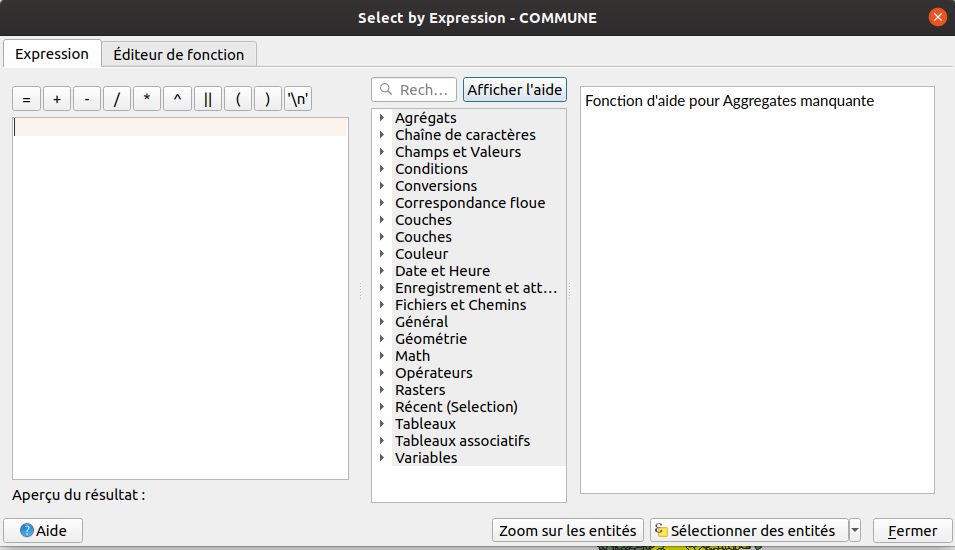

Fonctions sur une couche vecteur#
Utilisation des expressions QGIS#
- Les expressions sont très présentes dans QGIS, tant dans l'interface graphique que dans l'utilisation en Python.
- Nous partons de la couche des
COMMUNESuniquement chargé dans QGIS.
Tip
Adapter le num√©ro des codes INSEE ou des d√©partements selon votre BDTOPO üòâ
Sélection d'entité#
Nous souhaitons sélectionner les entités dont le code INSEE commence par 77.
Commençons par faire cela graphiquement dans QGIS Bureautique. À l'aide d'une expression QGIS, sélectionner
les codes INSEE qui commencent par 77 (à choisir un code INSEE propre au jeu de données).

Solution en mode graphique :
1 | |
Nous allons faire la même chose, mais en utilisant Python. Pensez à désélectionner les entités.
Il va falloir "échapper" un caractère à l'aide de \.
Voir la page Wikipédia sur l'échappement
ou ce meme pour les devs ü´¢
1 2 3 4 5 6 7 8 | |
Le raccourci iface.activeLayer() est très pratique, mais de temps en temps, on a besoin de plusieurs couches qui
sont déjà dans la légende. Il existe dans QgsProject plusieurs méthodes pour récupérer des couches dans la légende :
1 2 3 4 5 | |
Notons le s dans mapLayersByName. Il peut y avoir plusieurs couches avec ce même nom de couche. La fonction retourne
donc une liste de couches. Il convient alors de regarder si la liste est vide ou si elle contient plusieurs couches avec
len(communes) par exemple.
Warning
mapLayersByName fait uniquement une recherche stricte, sensible à la casse. Il faut passer par du
code Python "pure" en itérant sur l'ensemble des couches, indépendamment de leur nom si l'on souhaite faire une
recherche plus fine. Si vraiment, on a besoin, on peut utiliser le module re
(lien du Docteur Python).
1 2 3 4 5 6 7 8 9 10 11 | |
Exemple d'une sélection avec un export#
On souhaite pouvoir exporter les communes par département.
On peut créer une variable depts = ('34', '30') puis boucler dessus pour exporter les entités sélectionnées dans
un nouveau fichier.
1 2 3 4 5 6 7 8 9 10 11 12 13 14 15 16 17 18 19 20 21 22 23 24 | |
Bonus
Si l'on souhaite parcourir automatiquement les départements existants, on peut récupérer les valeurs uniques. Pour cela, il faut modifier deux lignes :
1 2 | |
Boucler sur les entités d'une couche sans expression#
Si besoin, pour que la suite de l'exercice soit plus rapide, on peut utiliser une couche ARRONDISSEMENT par exemple.
On peut parcourir les entités d'une couche QgsVectorLayer à l'aide de getFeatures().
Info
Avec PyQGIS, on peut accéder aux attributs d'une QgsFeature simplement avec l'opérateur [] sur
l'objet courant comme s'il s'agissait d'un dictionnaire Python :
1 2 | |
On peut le voir dans les exemples attribute de QgsFeature : https://qgis.org/pyqgis/3.34/core/QgsFeature.html#qgis.core.QgsFeature.attribute
1 2 3 4 5 6 7 | |
Boucler sur les entités à l'aide d'une expression#
L'objectif est d'afficher dans la console le nom des communes dont la code département INSEE_DEP correspond uniquement
à un seul département arbitraire.
L'exemple à ne pas faire, même si cela fonctionne (car on peut l'optimiser très facilement) :
1 2 3 4 5 6 | |
- Imaginons qu'il s'agisse d'une couche PostgreSQL, sur un serveur distant
- On demande à QGIS de récupérer l'ensemble de la table distante, équivalent à
SELECT * FROM ma_table - Puis, on filtre dans QGIS (toute la donnée est présente dans QGIS Bureautique désormais)
Tip
Ce qui prend du temps lors de l'exécution, c'est surtout le print en lui-même.
Si vous n'utilisez pas print, mais un autre traitement, cela sera plus rapide.
Un simple print ralenti l'exécution d'un script.
Optimisation de la requête#
Dans la documentation, observez bien la signature de la fonction getFeatures. Que remarquez-vous ?
Utilisons donc une expression pour limiter les résultats.
1 2 3 4 5 6 7 8 9 10 11 | |
Nous pouvons accessoirement ordonner les résultats et surtout encore optimiser la requête en :
- Ne demandant pas de charger la géométrie
- Ne demandant pas de charger tous les attributs, par exemple, on souhaite afficher que le nom de la commune et sa population.
La solution pour les experts
1 2 3 4 5 6 7 8 9 | |
- Faire le test en affichant un champ qui n'est pas dans la requête.
Enregistrement d'une requête dans une couche en mémoire#
Si l'on souhaite "enregistrer" le résultat de cette expression QGIS, on peut la matérialiser dans une nouvelle couche :
1 2 | |
Warning
Attention à la ligne iface.activeLayer() qui peut changer lors de l'ajout d'une nouvelle couche dans la légende.
Regardons le résultat et corrigeons ce problème d'export afin d'obtenir les géométries et les attributs,
il faut supprimer la ligne NoGeometry si vous l'avez.
Valeur NULL#
En PyQGIS, il existe la valeur NULL qui peut être présente dans la table attributaire d'une couche vecteur.
1 2 3 4 5 6 7 8 | |
Calculer un champ "densite"#
Nous souhaitons avoir une colonne densite dans notre table attributaire, avec la densité de population.
Mais regardons avant la gestion des erreurs lors d'un traitement. En effet, nous allons
vouloir "caster" (transformer le type) de la variable population en entier, mais attention,
il y a des valeurs NC dans les valeurs.
_Note, il n'y a désormais plus de valeur NC dans le champ POPULATION dans la donnée, mais imaginons. Il peut s'agir
d'une autre couche dont on ne connait pas la provenance et le contenu.
Les exceptions en Python#
Avant de traiter cet exercice, nous devons voir ce qu'est une exception en Python.
À plusieurs reprises depuis le début de la formation, il est fort à parier que nous ayons des messages en rouges dans la console de temps en temps. Ce sont des exceptions. C'est une notion de programmation qui existe dans beaucoup de languages.
Dans le langage informatique, une exception peut-être :
- levée ("
raise" en anglais) pour déclencher une erreur - attrapée ("catch" en anglais, ou plutôt "
except" en Python) pour traiter l'erreur
Essayons dans la console de faire une opération 10 / 2 :
1 | |
Essayons cette fois-ci 10 / 0, ce qui est mathématiquement impossible :
1 | |
Passons cette fois-ci dans un script pour que cela soit plus simple, et voir que le script s'arr√™te brutalement üòâ
1 2 3 | |
On peut "attraper" cette erreur Python à l'aide d'un try ... except... :
1 2 3 4 5 6 | |
Le try permet d'essayer le code qui suit. Le except permet d'attraper en filtrant s'il y a des exceptions
et de traiter l'erreur si besoin.
Tip
On peut avoir une ou plusieurs lignes de code dans chacun de ces blocs. On peut appeler des fonctions, etc.
Une exception remonte le fil d'exécution du programme#
Important, une exception remonte tant qu'elle n'est pas attrapée :
1 2 3 4 5 6 7 8 9 10 11 12 13 14 15 16 17 18 | |
Testons désormais d'attraper l'erreur dans la fonction 1 :
1 2 3 4 | |
On voit que Python, quand il peut, nous indique la "stacktrace" ou encore "traceback", c'est-à-dire une sorte de fil d'ariane.
Héritage des exceptions#
Toutes les exceptions héritent de Exception donc le code ci-dessous fonctionne, mais n'est pas
recommandé, car il masque d'autres erreurs :
1 2 3 4 5 6 7 8 | |
On peut par contre "enchaîner" les exceptions, afin de filtrer progressivement les exceptions.
1 2 3 4 5 6 7 8 9 10 11 | |
Il existe d'autres mots-clés en Python pour les exceptions comme finally: et else:.
Voir un autre tutoriel.
Évidement, on peut vérifier la valeur de b en amont si c'est égal à 0. Mais ceci est pour présenter le
concept des exceptions en Python.
Retour à l'exercice#
On souhaite donc savoir si un nombre est transformable en entier, dans le cas de la
population (s'il y a NC par exemple) :
1 2 | |
Correction possible de l'exercice :
1 2 3 4 5 6 7 8 9 10 11 12 13 14 15 16 17 18 19 20 | |
Nous souhaitons enregistrer ces informations dans une vraie table avec un nouveau champ densite_population.
Solution possible :
1 2 3 4 5 6 7 8 9 10 11 12 13 14 15 16 17 18 19 20 21 22 23 24 25 26 27 28 29 30 31 32 33 34 35 36 37 38 39 | |
Calculer deux champs en utilisant la géométrie et une reprojection à la volée#
Manipulons désormais la géométrie en ajoutant le centroïde de la commune dans une colonne latitude et
longitude en degrées.
Warning
TODO, en cours de correction, suppression de la variable petite_communes
1 2 3 4 5 6 7 8 9 10 11 12 13 14 15 16 17 18 19 20 21 22 23 24 25 26 27 28 29 30 31 32 33 34 35 36 37 38 39 | |